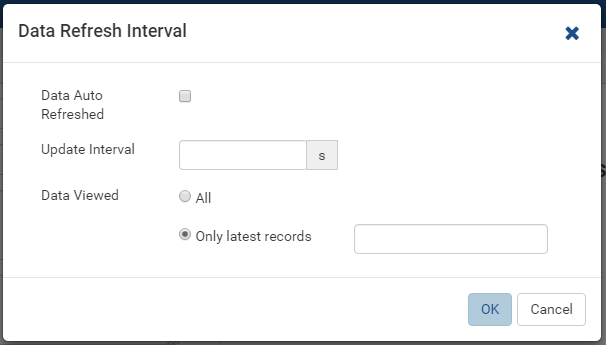

Report Designer/Map¶
Map is a built-in type of report part that displays data on geographic maps, ranging from world map to continent and country maps.
Configure Report Part Properties for Map¶

Fig. 269 Report Part Properties for Map
- Select the chart in Report Body (See Manage Report Parts for how to add a chart).
- Click the expand icon (<) on the right to open the Properties boxes if needed.
- Select the vertical Report Part Properties box.
- The properties are listed in Report Part Properties box in 6
sections. (Fig. 269)
- General Info
- Map
- Labels
- Legends
- Data
- View
User can configure the properties and see changes reflected in Preview pane:
Select a type in Map Type drop-down.
- World
- Continent
- Country
-
Configure border settings:
- In Map group, click the gear icon (⚙) to open Border Settings pop-up.
- Choose the border to be visible or not.
- Select a border color.
- Select a dash style.
- Select the border thickness (in pixels).
- Click OK to close the Border Settings pop-up.
-
Set the background color.
- In Map group, click the gear icon (⚙) to open Map Background Color Settings pop-up.
- Select a background color.
- Choose to apply the color to the entire map (covering the legend Sum(Freight)) or to the plot area only (covering the map only).
- Click OK to close the Map Background Color Settings pop-up.

Fig. 272 Map - Labels Settings
Configure the text direction for the labels
To be updated: Hover Labels
To be updated: Show Map Labels
Configure the legends.
Choose to display values of data points or not.
To be updated: Zoom into a region of the map.
- 
Fig. 275 Report Designer - Data Refresh Interval
Configure how often data is refreshed when report is being viewed.
- Click the gear icon (⚙) to open Data Refresh Interval Settings pop-up.
- Choose to have data refreshed automatically or manually.
- Enter an interval between each refresh (in seconds).
- Choose to view all data or enter a number to view that specific
number of latest records only.
{kind=link}
{kind=link}
{kind=link}
{kind=link}
{kind=link}
Note
If the Show Preview section in Configuration Mode checkbox (In Others tab in Advanced Settings) is unticked then The Preview section will not be displayed for following pop-ups:
- Map Border Settings
- Map Background Color Settings
- Legend Settings
- Zoom Settings
Fig. 276 Report Designer - Chart Border Settings without Preview section
Please see Update Others Settings for more details.